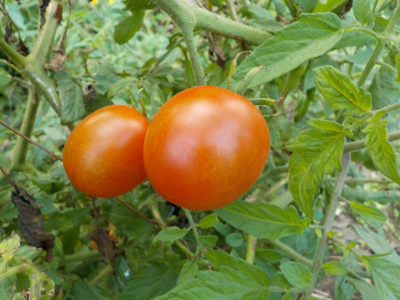
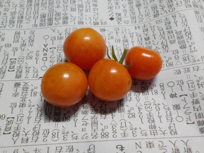
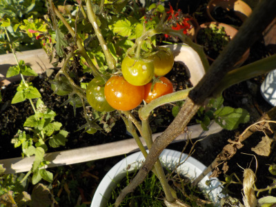
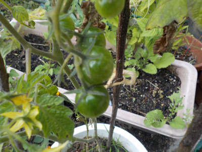
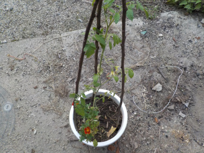
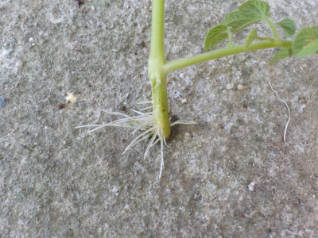
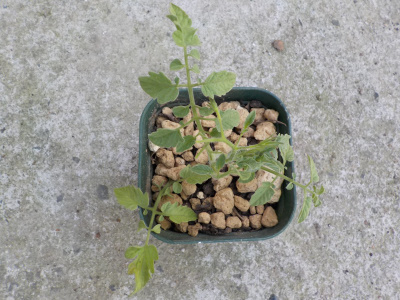
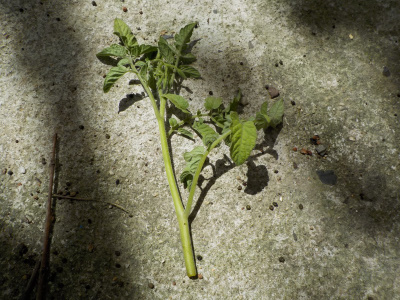

遊びで植物を育てよう
2022/10/16
今年種が落ちて育ったトマトです。

トマトの生ごみが落ちて、その中にあった種が育って実が出来ました。
普通に美味しくいただきました。
寒くなってきたので、そろそろトマトも終わりですね。
【トマトTOP】
【野菜TOP】
【園芸TOP】
2021/12/05
冬に出来たトマトを食べてみました。

真っ赤ではないですが、もうこれ以上赤くはならないと思うので食べることにしました。
味に期待はしていなかったんですが、意外と美味しかったです。
夏場より薄い味でしたが、ちゃんとトマト味でした。
12月まで育ててみて良かったです。
【トマトTOP】
【野菜TOP】
【園芸TOP】
2021/11/28
トマトは赤くならないかな。

11月末のトマトです。少し赤くなりましたね。
でもこの赤さだと食べる気がしません。もうちょっと放置しようと思います。
寒くなったので、先に枯れるかもしれません。
【トマトTOP】
【野菜TOP】
【園芸TOP】
2021/10/23
青いトマトは赤くなるかな？

トマトに青い実が出来ています。
もうすぐ11月ですが、食べれるまで育つかなー？
ここまで育てたので、できたら食べたいです。
【トマトTOP】
【野菜TOP】
【園芸TOP】
2021/09/20
トマトの鉢を大きくしました。

挿し木のトマトが大きくなったので、鉢を大きくしました。
マリーゴールドの苗が余っていたので一緒に植えました。ちょっと賑やかになっていい感じです。
寒くなるまでに実が食べれるかな？
【トマトTOP】
【野菜TOP】
【園芸TOP】
2021/07/31
水挿しのトマトから根っこが出ました。

水に漬けてたトマトの芽から根っこが出ました。

土に植え替えしました。
どれくらいのスピードで成長するでしょうね。1月で50センチ位の高さにならないかな。
【トマトTOP】
【野菜TOP】
【園芸TOP】
2021/07/25
トマトの挿し芽に今頃挑戦です。

今まで薄皮のミニトマトって柔らかすぎて好きじゃなかったんですが、急に好きになりました。
逆にアイコは硬くてちょっと苦手になりました。
薄皮トマトの脇芽を使って増やそうと思います。
でももう7月も終わり。トマトが実るまで成長するかな？
試しにやってみようと思います。鉢植えで過保護に育てたら出来るかな？
【トマトTOP】
【野菜TOP】
【園芸TOP】
夏は味噌汁の代わりにトマトを食べます。（沢山あるので。）
【おいしいものを食べよう。】【たくさん寝よう。】
【ソロ活をしよう!】【季節感のあることをしよう。】【動画視聴はほどほどに。】【当サイトの全てのコンテンツは無断転載禁止です。】